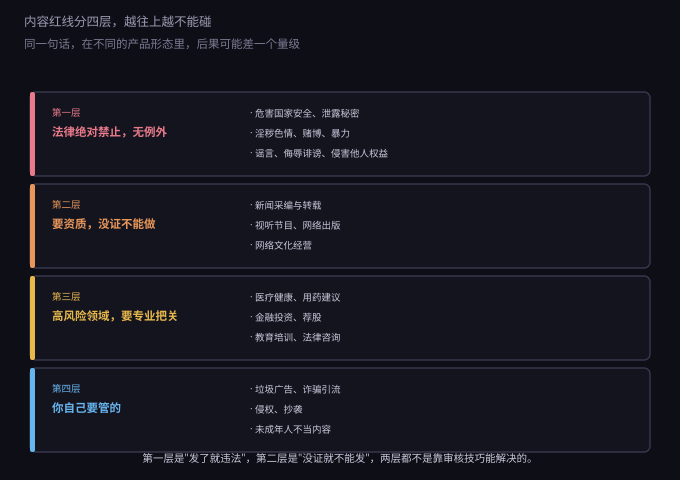
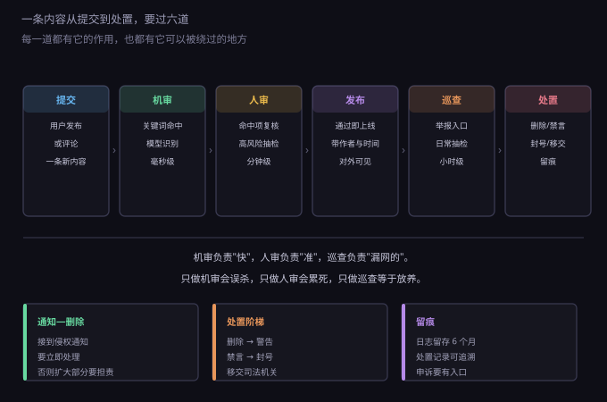
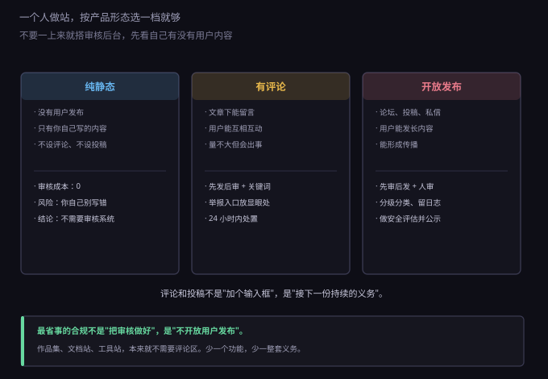

约 0.33 万字 · 3 张图 · 一个站被关掉，多数不是因为代码
先把一句最容易被误解的话说清楚："内容不是我发的，所以跟我没关系"是错的。
《网络安全法》第四十七条写得很直接：网络运营者应当加强对其用户发布的信息的管理， 发现法律、行政法规禁止发布或者传输的信息的， 应当立即停止传输、采取消除等处置措施、防止信息扩散、 保存有关记录，并向主管部门报告。
注意这句话里的动词：停止、消除、防止、保存、报告。 不是"删掉就行"，是五个动作。很多人只做了第一个。
除了这条，还有几份文件叠在上面：
这些叠起来的效果是：你没有"不审核"的权利，只有"审核到什么程度"的选择。 而这个程度，跟你开放了多少发布能力直接相关——这是第五节要讲的核心。
"红线"这个词容易被理解成一条线，实际是四层，性质完全不同。

第一层，法律绝对禁止。危害国家安全、泄露国家秘密、 颠覆政权、破坏国家统一、煽动民族仇恨、破坏宗教政策、散布谣言扰乱秩序、 淫秽色情、赌博、暴力凶杀、恐怖或教唆犯罪、侮辱诽谤他人。 这一层没有"程度"可讲，也没有"我不是故意的"这种抗辩。 发现之后唯一正确的动作是：立即下架、保存记录、视情况报告。
第二层，要资质才能做。新闻采编与转载、 视听节目、网络出版、网络文化经营，这些不是"内容合规"问题， 是"你有没有资格做这个业务"的问题。 一个技术博客转载一篇媒体报道，通常没事； 但如果做成"每日新闻 aggregator"，性质就变了。
第三层，高风险领域要专业把关。医疗健康、用药建议、 金融投资、荐股、教育培训、法律咨询——这些不是不能做， 是做的时候要有资质、有免责声明、有专业人员审核。 一个开发者写"我用了这个降压药，效果不错"是个人分享； 做成"用药指南"栏目就是另一回事。
第四层，平台自己要管的。垃圾广告、诈骗引流、 侵权抄袭、未成年人不当内容。这一层法律没有逐条列举， 但出了事平台要担责，所以得靠规则、关键词和人工。
内容审核的技术形态，本质上是一条流水线。哪怕你只有一个人， 这条线上的每一道都存在，只是有的用代码实现，有的用眼睛实现。

第一道，提交。用户发布、评论、投稿、私信， 甚至改昵称、换头像，都是内容入口。很多人只盯正文， 忘了昵称和头像是最高频的违规载体。
第二道，机审。两种手段：关键词匹配和模型识别。 关键词快、便宜、能解释，但只认字面；模型能识别变体和图片， 但会误判、要花钱。实际做法是两层都上：关键词挡明显的， 模型挡变形的。
第三道，人审。机审命中的送人工复核， 另外按比例抽检没命中的。人审的作用不是"再看一遍"， 是校准机审——把误杀的放回来，把漏掉的补进词库。
第四道，发布。通过之后对外可见。 这一步要记录作者、时间、IP、内容快照，出事时能还原。
第五道，巡查。两个来源：用户举报和日常抽检。 举报入口要放在显眼位置，不能藏在设置第五层。 巡查的意义是补前四道的漏——任何审核都有漏，区别只在漏了之后多久被发现。
第六道，处置。分阶梯：删除内容、警告、限制发言、 禁言、封号、移交司法机关。一上来就封号看起来解气， 实际会激化矛盾，也容易在申诉时说不清。
还有一条常被忽略的前置要求：真实身份认证。 《互联网跟帖评论服务管理规定》要求跟帖评论服务提供者对注册用户 进行真实身份信息认证——不是把身份证公开，而是后台能对应到真实的人。 一个手机号验证通常就满足最低要求；完全不认证、纯匿名发帖， 在监管看来是明显缺项。
与之配套的是响应时效。举报进来之后， 多数平台的做法是"当日处理、最迟不超过二十四小时"。 这个数字没有写死在某一条法律里，但它是实践中被反复检验的标准： 拖过一天，内容可能已经传开了，而传开之后的处置成本是完全不同的量级。
这条线之外还有一件事容易被忘：留痕。 《网络安全法》第二十一条要求留存网络日志不少于六个月， 处置记录、举报处理记录、申诉记录也要能查。 这不是形式主义——真被投诉时，你能拿出"什么时候发现、怎么处理、 通知了谁"的记录，和拿不出来，是两个结果。
《民法典》第一千一百九十五条建立了一套流程，业内叫"避风港"： 权利人发现侵权，通知平台；平台接到通知后， 应当及时转送相关用户，并根据初步证据采取必要措施； 未及时采取必要措施的，对损害的扩大部分承担连带责任。
这里的关键词是"扩大部分"。意思是：通知之前的那段损害， 平台不一定担；通知之后你还不处理，那部分就要一起担。 所以"及时"这两个字值钱。
一千一百九十七条补了另一半：如果平台知道或者应当知道 用户在侵权还不处理，那就不只是扩大部分，是全部连带。 "应当知道"这四个字，把"我没看见"这个抗辩基本堵死了—— 一个内容挂在首页热门第一位，说自己没看见，没人信。
实操上有三个动作要做对：
反过来，如果你是被侵权的一方，这份规则也是你的工具： 通知写得越规范（权属清晰、链接具体、身份真实），平台处理得越快。 一句"你们网站有人抄我东西"，通常会被当成无效通知。
这是这一节最想讲清楚的部分。审核义务的强度， 跟你的产品形态直接挂钩，不是所有站都需要一套审核后台。

第一档，纯静态。没有用户发布，只有你自己写的内容， 不设评论、不设投稿。这种情况下不需要审核系统， 需要的是你自己别写错——尤其是转载、引用、图片版权。 作品集、文档站、工具站大多属于这一档。
第二档，有评论。文章下面能留言，用户之间能互动。 这一档的现实做法是：先发后审 + 关键词过滤 + 显眼举报入口 + 24 小时内处置。 评论量不大的时候，人工看完全可行——一天几十条， 花十分钟扫一遍比接一套系统便宜。
第三档，开放发布。论坛、投稿、私信、长内容， 用户能形成传播。这一档就必须先审后发， 而且要分级分类、留日志、做安全评估并公示（上一节提过）。 到了这一档，"一个人"基本不成立了，要么限制开放范围， 要么接受内容质量下降。
所以最省事的合规不是"把审核做好"，是不开放用户发布。 这句话听起来像逃避，其实是产品决策： 一个作品集网站本来就不需要评论区， 加上它只多了互动，却多了一整套持续义务。
如果决定做评论，绕不开词库。词库的核心矛盾是： 放宽了漏，收紧了误杀。
几个实操经验。
一、词库分三档。直接拦截（明确违法）、 送人审（可能有问题）、只记录（观察用）。 全塞进"直接拦截"，误杀率会高到用户骂人。
二、注意组合词。"色情"要拦，"色情小说"要拦， 但"色素"不该拦。单纯字符串匹配很容易把正常词切坏， 所以要么用分词，要么给常见误伤词加白名单。
三、变体要单独处理。拼音、谐音、拆字、符号插入、 图片里的文字，都是绕过关键词的常见方式。这一层靠规则很难穷举， 通常交给模型或图片识别。
四、误杀要有申诉。用户被拦了，得知道为什么、 能去哪儿说。哪怕只是"提交申诉"一个按钮 + 你手动看， 体验也远好于"发布失败，原因不详"。
五、成本可以估算。云厂商的内容安全接口， 文本一般按千次计费，图片贵一些，量级在每千次几毛到几块钱。 评论量小的站，一个月的成本往往低于一杯咖啡； 但如果你把它接在每一个页面请求上，账单会变得很难看。
一、以为"我只是个技术博客"。 博客本身没问题，但只要开了评论，就有了用户发布内容， 就有了管理义务。义务不看你自认为是什么，看你实际提供了什么功能。
二、删了就当处理完了。 第四十七条要求的是五个动作：停止传输、消除、防止扩散、保存记录、报告。 只删不存，等于少了一半。尤其是涉及第一层的内容， 记录往往比删除本身更重要。
三、只审文字不审图片和链接。 违规内容最常见的载体是图片、二维码、短链接、文件名。 一个纯文本过滤器，挡不住这些东西。
四、举报入口藏起来。 有的站把举报放在"设置 - 帮助 - 联系我们 - 意见反馈"第四层， 这在监管看来等于没有。举报入口应该在内容旁边，一眼能看到。
五、处置没有阶梯。 第一次违规就永久封号，用户申诉时你很难解释"为什么这么重"。 分级处置既是给用户机会，也是给自己留退路。
六、忘了未成年人。 如果你的产品面向公众且有内容，要考虑未成年人保护： 不适宜内容的过滤、青少年模式、监护人投诉渠道。 这一块在检查里被问到的频率比想象中高。